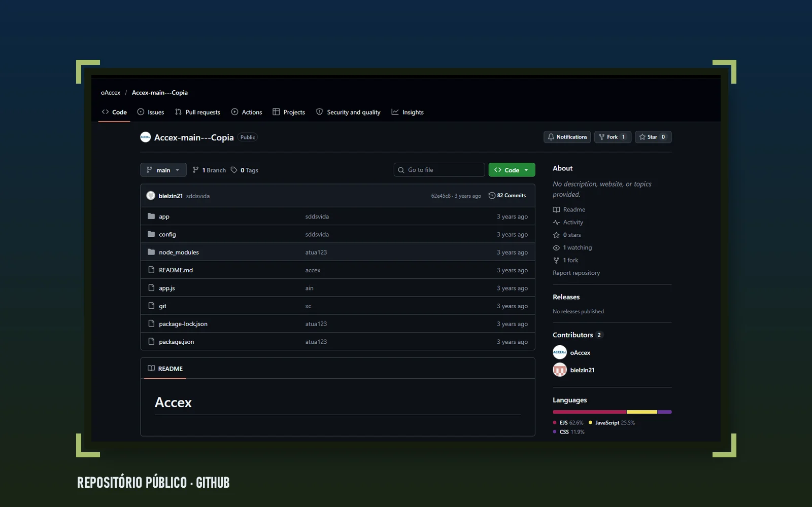
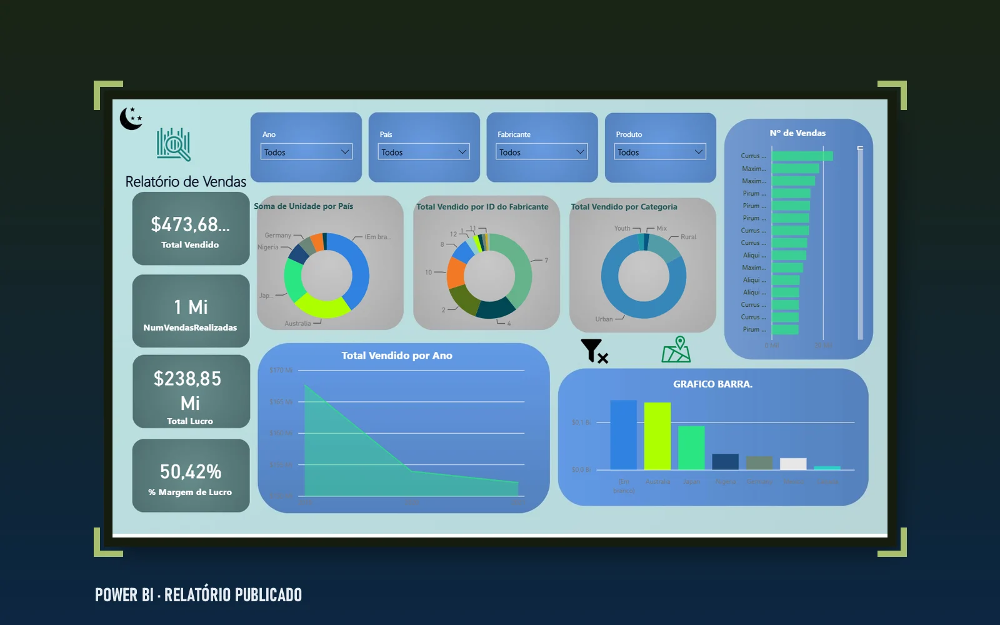
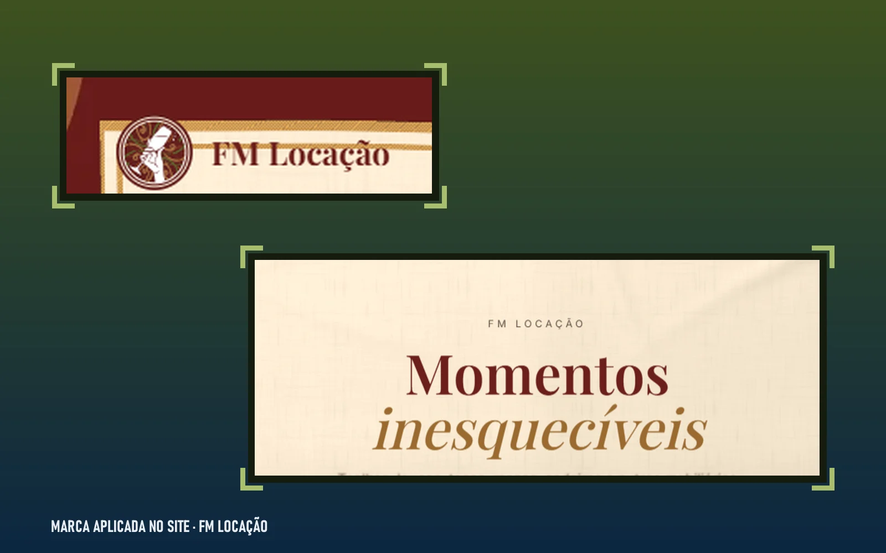

Trajetória
Comecei cedo, conciliando o técnico com freelas em eventos. Fui vendedor numa loja de surfe, meu primeiro compromisso profissional, e passei quase dois anos em um call center.
Portfólio
Desenvolvimento web · Dados
Crio sistemas web e análises de dados para problemas reais de operação.
Antes da tecnologia, vendas e quase dois anos de call center, onde desenvolvi oratória, argumentação e leitura de negociação. Hoje, graduando em ADS e buscando estágio ou júnior.

Quem sou, de onde vim e com o que trabalho.
Estudo Análise e Desenvolvimento de Sistemas na Cruzeiro do Sul e sou técnico em Informática para Internet pela FIEB. Hoje desenvolvo o site e o sistema de gestão da FM Locação em Python e Django, com mais de 200 testes automatizados, e trabalho com SQL e Power BI para análise de dados. Antes da tecnologia, passei por vendas e quase dois anos de call center, onde aprendi a ouvir, negociar e explicar com clareza. Concluí cursos de IA generativa e agentes (AWS Generative AI Foundations e Azure AI-103) e busco minha primeira oportunidade como estagiário ou júnior.
Comecei cedo, conciliando o técnico com freelas em eventos. Fui vendedor numa loja de surfe, meu primeiro compromisso profissional, e passei quase dois anos em um call center.
O projeto principal primeiro. Depois os outros, todos no mesmo formato.
Site e sistema de gestão para uma locadora de itens para eventos.
Python · Django · JavaScript · GitHub Actions · mais de 200 testes automatizados
Catálogo com preços, simulador de composição de mesa e pedido enviado pelo WhatsApp. O conteúdo é editado num painel privado e publicado com verificação automática.
Uso interno da locadora: mostra o que está livre em cada período, transforma o orçamento aprovado em contrato sem redigitar e controla o que cada pessoa da equipe vê.

WebPlataforma full-stack para classificar a acessibilidade urbana. Projeto de conclusão do curso técnico, feito em grupo.

DadosRelatório em Power BI com ETL, modelagem de dados e medidas DAX para acompanhar indicadores comerciais.

DesignLogotipo, materiais digitais e marketing contínuo no Instagram, com reels, fotos e vídeos, além da gestão do projeto.
O resumo. O completo está no PDF.
Currículo completo, numa página, pronto para imprimir.
Baixar Currículo ↓Buscando um estagiário ou desenvolvedor júnior para o seu time? Vamos conversar.